BOZZA DI LAVORO · SATIRA · LE CLASSIFICAZIONI NON HANNO ALCUN VALORE SCIENTIFICO
Atlante antropometrico dei ministri e delle ministre
Lombroso
I volti del potere, misurati con il metodo che il potere vuole usare su di noi
Nel 1876 Cesare Lombroso sostenne che il delinquente si riconosce dalla faccia: mandibola, zigomi, naso. Era falso allora ed è falso oggi. Eppure la stessa idea, misurare i tratti di un volto, il colore della pelle, il tipo di camminata, per decidere chi sei, è tornata in voga. Maranza, anarco-insurrezionalisti, zecche rosse, sono i bersagli preferiti delle destre al potere, compresa la nostra.
Rispetto ai criminologi e ai poliziotti di fine '800, i nostri post-fascisti hanno però delle tecnologie in più per identificare, controllare, sorvegliare, fermare, chiunque secondo loro sia un criminale: tecnologie come il riconoscimento facciale.
C'è una cosa che però non hanno tenuto in conto: queste tecnologie sono oggi alla portata di tutti, anche di chi non vuole arrendersi alla deriva autoritaria, repressiva e fascistoide del proprio paese.
Allora abbiamo preso le fotografie dei ministri e delle ministre e le abbiamo passate a una macchina. Poi abbiamo applicato le regole di Lombroso, alla lettera.
Di profilo, purtroppo, non ne esistono quasi: nessuna fotografia ufficiale mostra il lato del viso che Lombroso considerava decisivo. Abbiamo dovuto accontentarci delle poche frontali disponibili. I ministri e le ministre che desiderano un'identificazione più accurata sono invitati a inviarci di propria iniziativa le loro fotografie di profilo, destro e sinistro. Le foto che preferiscono, perché al contrario di quanto fa questo governo, noi non andremo a prenderli in casa o a fermarli nelle zone rosse per identificarli in maniera coatta.
23soggetti misurati
12criminaloide
3omicida
3anarchico
2ladro
2delinquente per passione
1truffatore
2in attesa di misurazione
Tavole
Passa sopra un ritratto per vedere ciò che vede la macchina.
Ogni riga mostra quanto il soggetto si discosta dalla media del gruppo: al centro la media, nelle fasce rosse l'anomalia.
Gli omicidi (3)
Mandibole robuste, zigomi larghi, labbra sottili.
Soggetto n. 011 anomalia
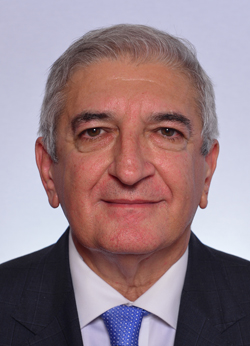
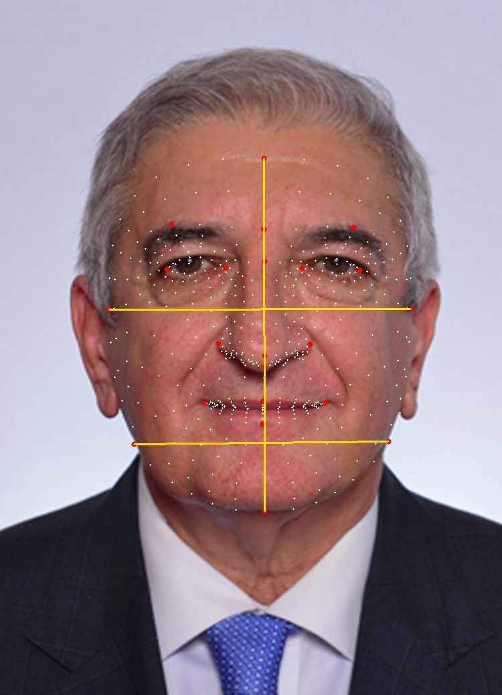
omicida
Tommaso Foti
Ministro per gli Affari europei, il PNRR e le Politiche di coesione
Tipoomicida
Mandibola+1,5
Zigomi−0,1
Larghezza del naso−0,2
Deviazione del naso−0,6
Spessore delle labbra−1,0
Asimmetria del volto−0,2
Grandezza degli occhi+0,7
Lunghezza del naso+0,7
Il soggetto presenta mandibola voluminosa.
mandibola voluminosa
Fotografia di bassa qualità: risultato da confermare. Se il soggetto ci invia un suo ritratto migliore, ricalcoliamo.
Foto: Camera dei deputati
Soggetto n. 021 anomalia
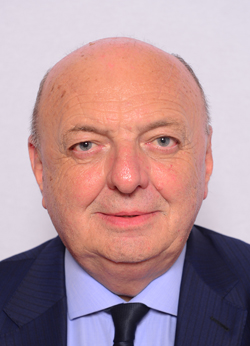
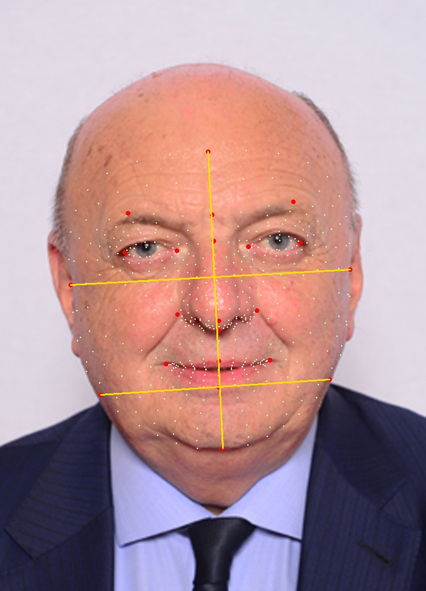
omicida
Gilberto Pichetto Fratin
Ministro dell'Ambiente e della Sicurezza energetica
Tipoomicida
Mandibola+0,4
Zigomi+2,3
Larghezza del naso+0,2
Deviazione del naso−1,0
Spessore delle labbra−0,3
Asimmetria del volto−0,9
Grandezza degli occhi+0,2
Lunghezza del naso+0,8
Il soggetto presenta zigomi sporgenti.
zigomi sporgenti
Fotografia di bassa qualità: risultato da confermare. Se il soggetto ci invia un suo ritratto migliore, ricalcoliamo.
Foto: Camera dei deputati
Soggetto n. 031 anomalia
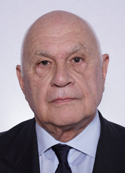
omicida
Carlo Nordio
Ministro della Giustizia
Tipoomicida
Mandibola+1,8
Zigomi+0,4
Larghezza del naso+0,5
Deviazione del naso+0,7
Spessore delle labbra−1,1
Asimmetria del volto−0,2
Grandezza degli occhi−0,7
Lunghezza del naso−0,6
Il soggetto presenta mandibola voluminosa.
mandibola voluminosa
Fotografia di bassa qualità: risultato da confermare. Se il soggetto ci invia un suo ritratto migliore, ricalcoliamo.
Foto: Camera dei deputati
I ladri (2)
Naso torto o camuso.
Soggetto n. 043 anomalie
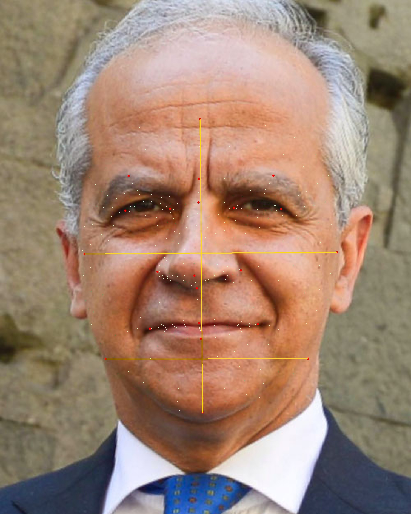
ladro
Matteo Piantedosi
Ministro dell'Interno
Tipoladro
Mandibola−0,5
Zigomi+0,2
Larghezza del naso+1,6
Deviazione del naso+3,1
Spessore delle labbra−1,5
Asimmetria del volto−0,6
Grandezza degli occhi−0,2
Lunghezza del naso−0,3
Il soggetto presenta naso camuso, naso torto e labbra sottili.
naso camuso
naso torto
labbra sottili
Foto: raccolta dalla redazione
Soggetto n. 051 anomalia
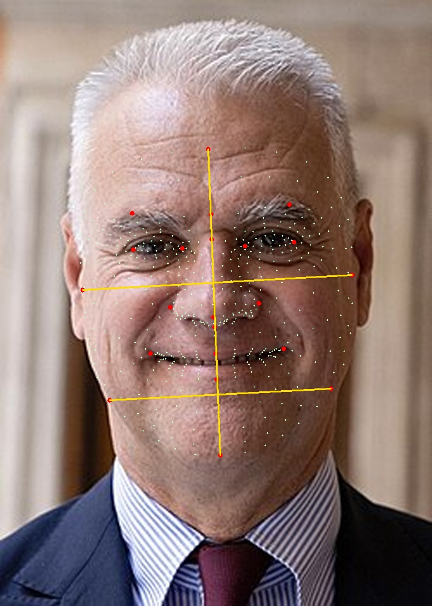
ladro
Paolo Zangrillo
Ministro per la Pubblica Amministrazione
Tipoladro
Mandibola+0,4
Zigomi+0,7
Larghezza del naso+2,4
Deviazione del naso−0,6
Spessore delle labbra−0,9
Asimmetria del volto−0,8
Grandezza degli occhi−0,3
Lunghezza del naso−1,5
Il soggetto presenta naso camuso.
naso camuso
Fotografia di bassa qualità: risultato da confermare. Se il soggetto ci invia un suo ritratto migliore, ricalcoliamo.
Foto: Senato della Repubblica
I truffatori (1)
Occhi piccoli e naso lungo, sotto un'aria di bonarietà.
Soggetto n. 061 anomalia
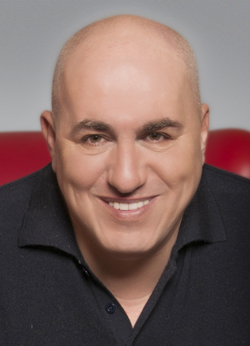
truffatore
Guido Crosetto
Ministro della Difesa
Tipotruffatore
Mandibola−1,8
Zigomi−0,6
Larghezza del naso−0,6
Deviazione del naso+0,5
Spessore delle labbra+0,5
Asimmetria del volto−0,1
Grandezza degli occhi−0,9
Lunghezza del naso+2,3
Il soggetto presenta naso lungo.
naso lungo
Fotografia di bassa qualità: risultato da confermare. Se il soggetto ci invia un suo ritratto migliore, ricalcoliamo.
Foto: Camera dei deputati (XVIII leg.)
Gli anarchici (3)
L'asimmetria del volto, secondo Lombroso, tradisce l'animo ribelle.
Soggetto n. 071 anomalia
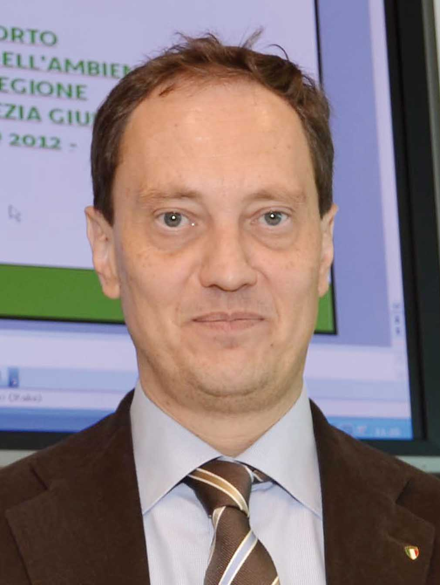
anarchico
Luca Ciriani
Ministro per i Rapporti con il Parlamento
Tipoanarchico
Mandibola−0,8
Zigomi−0,9
Larghezza del naso−0,3
Deviazione del naso−0,6
Spessore delle labbra−0,1
Asimmetria del volto+1,5
Grandezza degli occhi+1,8
Lunghezza del naso−1,1
Il soggetto presenta asimmetria facciale.
asimmetria facciale
Foto: Senato della Repubblica
Soggetto n. 081 anomalia
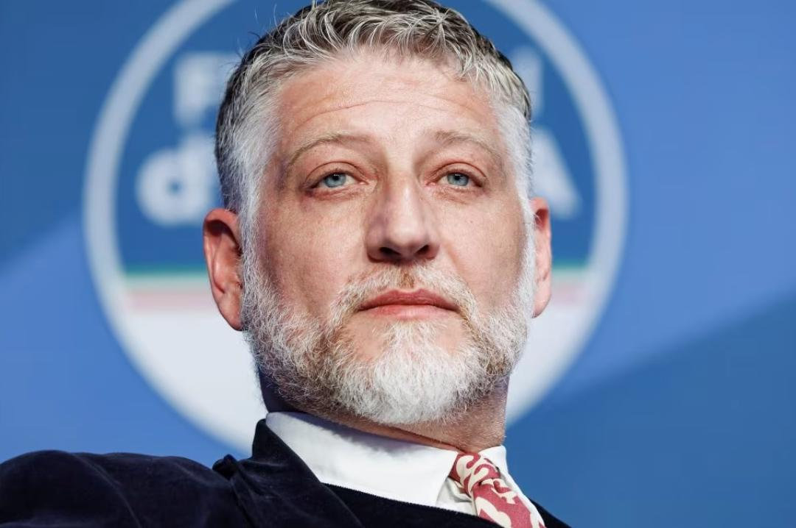
anarchico
Alessandro Giuli
Ministro della Cultura
Tipoanarchico
Mandibola+1,2
Zigomi+0,8
Larghezza del naso+0,1
Deviazione del naso−0,7
Spessore delle labbra+0,1
Asimmetria del volto+2,7
Grandezza degli occhi−0,8
Lunghezza del naso−1,6
Il soggetto presenta asimmetria facciale.
asimmetria facciale
Fotografia di bassa qualità: risultato da confermare. Se il soggetto ci invia un suo ritratto migliore, ricalcoliamo.
Foto: raccolta dalla redazione
Soggetto n. 091 anomalia
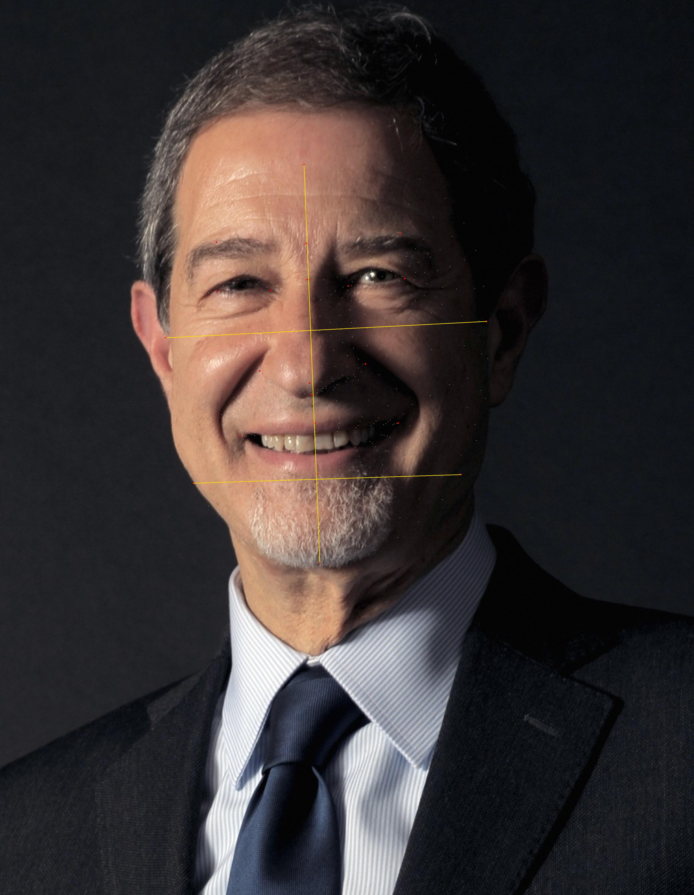
anarchico
Nello Musumeci
Ministro per la Protezione civile e le Politiche del Mare
Tipoanarchico
Mandibola+1,0
Zigomi−1,3
Larghezza del naso+0,8
Deviazione del naso−1,0
Spessore delle labbra+0,6
Asimmetria del volto+2,2
Grandezza degli occhi−1,2
Lunghezza del naso−0,9
Il soggetto presenta asimmetria facciale.
asimmetria facciale
Foto: Senato della Repubblica
I delinquenti per passione (2)
Lineamenti belli e armonici, nessuna anomalia: delinquono per impeto, non per natura.
Soggetto n. 100 anomalie
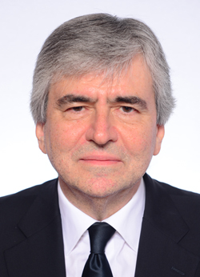
delinquente per passione
Gianmarco Mazzi
Ministro del Turismo
Tipodelinquente per passione
Mandibola+0,6
Zigomi+0,9
Larghezza del naso−0,1
Deviazione del naso−0,6
Spessore delle labbra−0,6
Asimmetria del volto−1,1
Grandezza degli occhi−0,6
Lunghezza del naso+0,4
Il soggetto presenta fisionomia armonica.
fisionomia armonica
Fotografia di bassa qualità: risultato da confermare. Se il soggetto ci invia un suo ritratto migliore, ricalcoliamo.
Foto: Camera dei deputati
Soggetto n. 110 anomalie
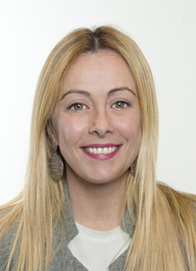
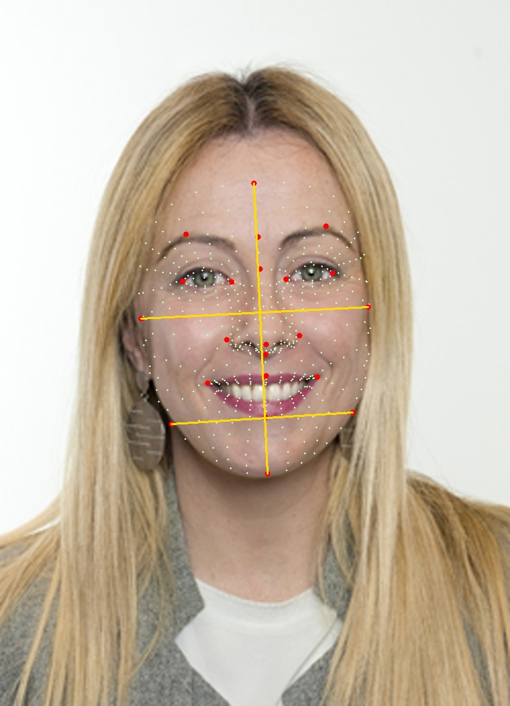
delinquente per passione
Giorgia Meloni
Presidente del Consiglio
Tipodelinquente per passione
Mandibola−0,8
Zigomi−1,9
Larghezza del naso−0,5
Deviazione del naso+1,2
Spessore delle labbra+1,3
Asimmetria del volto−1,1
Grandezza degli occhi+2,6
Lunghezza del naso+0,2
Il soggetto presenta fisionomia armonica.
fisionomia armonica
Fotografia di bassa qualità: risultato da confermare. Se il soggetto ci invia un suo ritratto migliore, ricalcoliamo.
Foto: Camera dei deputati
I criminaloidi (12)
Nessun tratto che li distingua dal gruppo: delinquenti d'occasione, in attesa dell'occasione.
Soggetto n. 121 anomalia
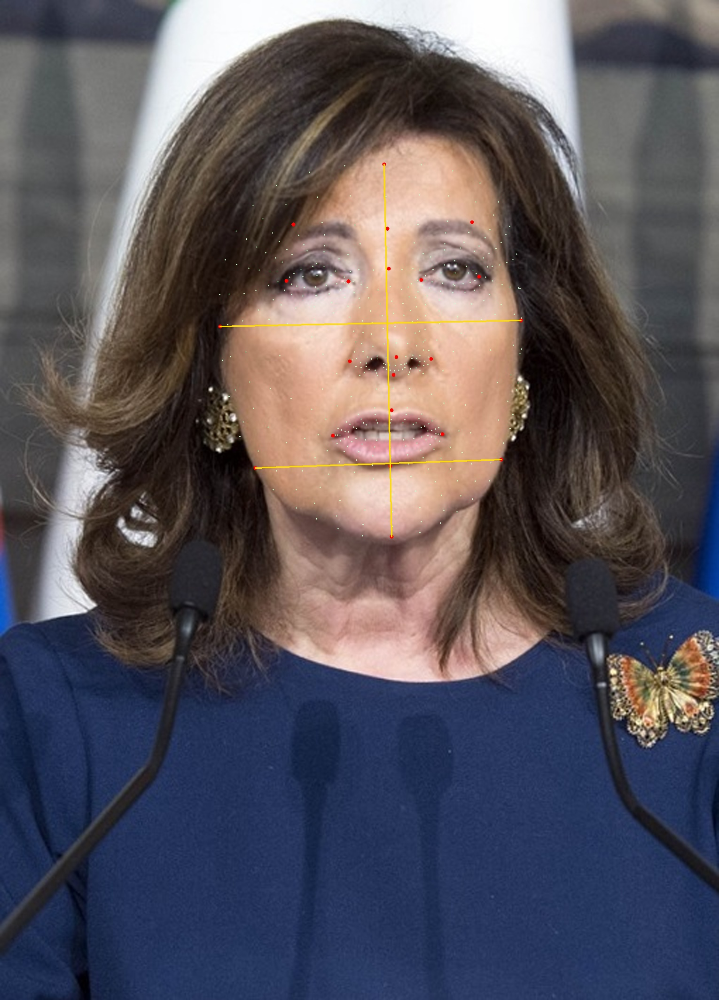
criminaloide
Maria Elisabetta Alberti Casellati
Ministra per le Riforme istituzionali
Tipocriminaloide
Mandibola+0,2
Zigomi−1,2
Larghezza del naso−1,8
Deviazione del naso+0,6
Spessore delle labbra+2,9
Asimmetria del volto+0,1
Grandezza degli occhi+1,4
Lunghezza del naso−1,5
Il soggetto presenta labbra tumide.
labbra tumide
Fotografia di bassa qualità: risultato da confermare. Se il soggetto ci invia un suo ritratto migliore, ricalcoliamo.
Foto: Senato della Repubblica
Soggetto n. 130 anomalie
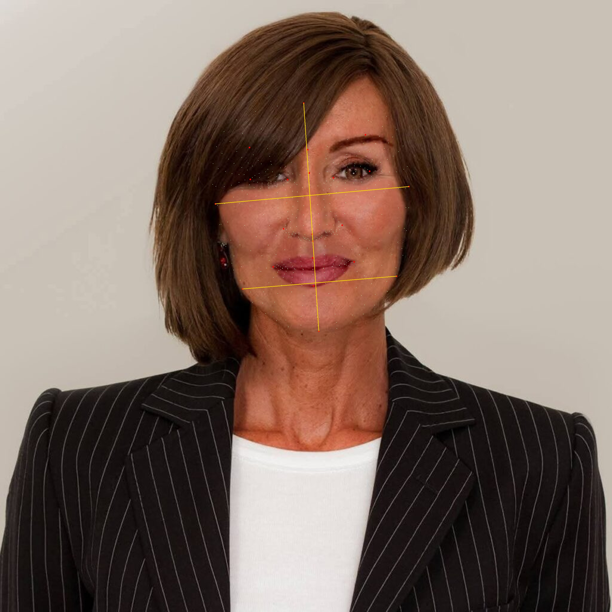
criminaloide
Anna Maria Bernini
Ministra dell'Università e della Ricerca
Tipocriminaloide
Mandibola−0,8
Zigomi−0,2
Larghezza del naso−0,4
Deviazione del naso+0,7
Spessore delle labbra+0,9
Asimmetria del volto+1,0
Grandezza degli occhi+0,6
Lunghezza del naso+0,5
Nessuna anomalia propria. Delinquente d'occasione: nulla lo distingue dalla media del gruppo.
Foto: Senato della Repubblica
Soggetto n. 140 anomalie
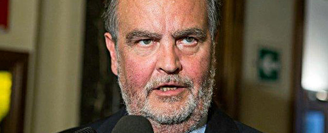
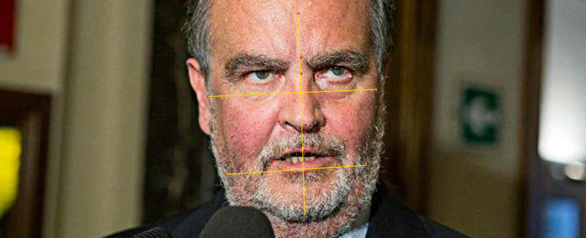
criminaloide
Roberto Calderoli
Ministro per gli Affari regionali e le Autonomie
Tipocriminaloide
Mandibola+0,8
Zigomi−0,4
Larghezza del naso−1,2
Deviazione del naso−0,9
Spessore delle labbra+1,1
Asimmetria del volto+0,6
Grandezza degli occhi+0,8
Lunghezza del naso−0,6
Nessuna anomalia propria. Delinquente d'occasione: nulla lo distingue dalla media del gruppo.
Fotografia di bassa qualità: risultato da confermare. Se il soggetto ci invia un suo ritratto migliore, ricalcoliamo.
Foto: Senato della Repubblica
Soggetto n. 150 anomalie
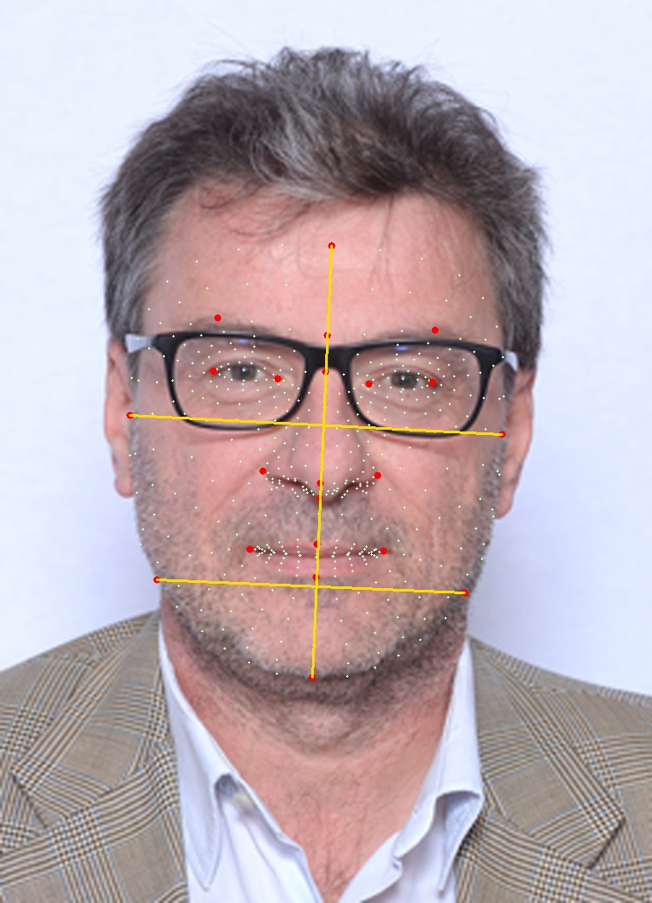
criminaloide
Giancarlo Giorgetti
Ministro dell'Economia e delle Finanze
Tipocriminaloide
Mandibola+0,8
Zigomi+0,2
Larghezza del naso+0,4
Deviazione del naso+1,0
Spessore delle labbra−0,3
Asimmetria del volto−0,6
Grandezza degli occhi−1,2
Lunghezza del naso−0,3
Nessuna anomalia propria. Delinquente d'occasione: nulla lo distingue dalla media del gruppo.
Fotografia di bassa qualità: risultato da confermare. Se il soggetto ci invia un suo ritratto migliore, ricalcoliamo.
Foto: Camera dei deputati
Soggetto n. 160 anomalie
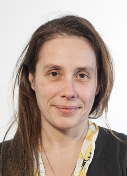
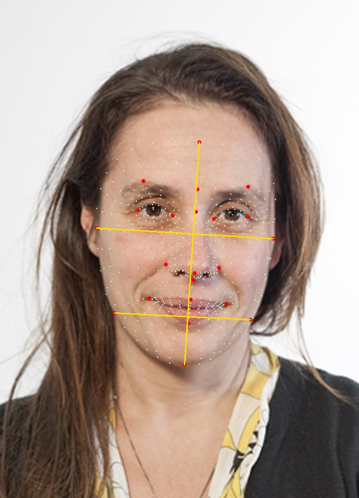
criminaloide
Alessandra Locatelli
Ministra per le disabilità
Tipocriminaloide
Mandibola−2,0
Zigomi−1,6
Larghezza del naso−1,6
Deviazione del naso−1,3
Spessore delle labbra+0,5
Asimmetria del volto−0,2
Grandezza degli occhi+0,9
Lunghezza del naso+1,4
Nessuna anomalia propria. Delinquente d'occasione: nulla lo distingue dalla media del gruppo.
Fotografia di bassa qualità: risultato da confermare. Se il soggetto ci invia un suo ritratto migliore, ricalcoliamo.
Foto: Camera dei deputati (XVIII leg.)
Soggetto n. 170 anomalie
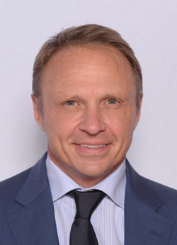
criminaloide
Francesco Lollobrigida
Ministro dell'Agricoltura, Sovranità alimentare e Foreste
Tipocriminaloide
Mandibola−1,0
Zigomi+1,1
Larghezza del naso+0,6
Deviazione del naso−0,1
Spessore delle labbra+0,7
Asimmetria del volto−0,2
Grandezza degli occhi−0,2
Lunghezza del naso+0,7
Nessuna anomalia propria. Delinquente d'occasione: nulla lo distingue dalla media del gruppo.
Fotografia di bassa qualità: risultato da confermare. Se il soggetto ci invia un suo ritratto migliore, ricalcoliamo.
Foto: Camera dei deputati
Soggetto n. 180 anomalie
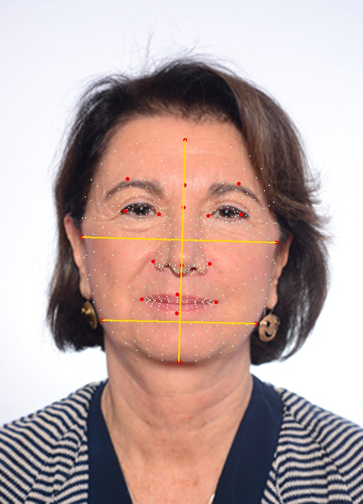
criminaloide
Eugenia Maria Roccella
Ministra per la Famiglia, la Natalità e le Pari opportunità
Tipocriminaloide
Mandibola−0,9
Zigomi+0,6
Larghezza del naso−0,5
Deviazione del naso−0,2
Spessore delle labbra−0,3
Asimmetria del volto−0,3
Grandezza degli occhi−1,1
Lunghezza del naso+1,0
Nessuna anomalia propria. Delinquente d'occasione: nulla lo distingue dalla media del gruppo.
Fotografia di bassa qualità: risultato da confermare. Se il soggetto ci invia un suo ritratto migliore, ricalcoliamo.
Foto: Camera dei deputati
Soggetto n. 190 anomalie
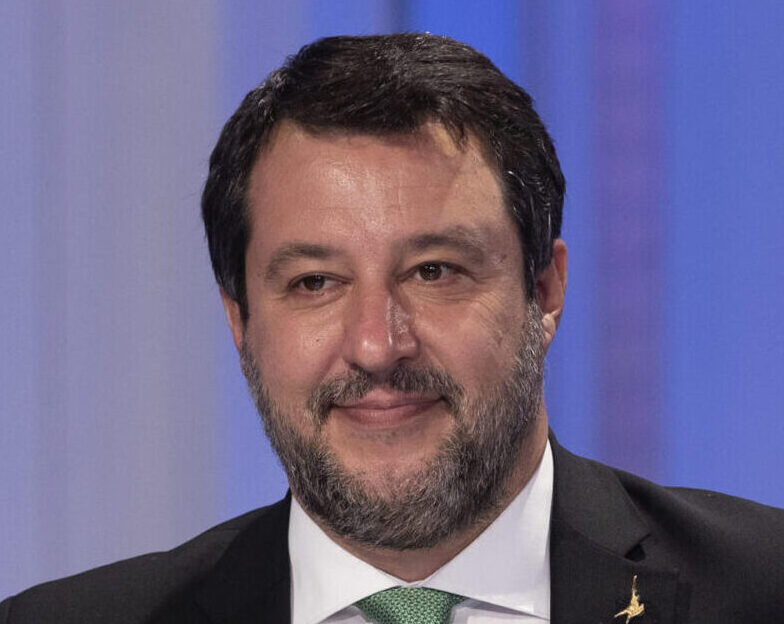
criminaloide
Matteo Salvini
Vice Presidente - Ministro delle Infrastrutture e Trasporti
Tipocriminaloide
Mandibola−0,0
Zigomi−0,2
Larghezza del naso−0,9
Deviazione del naso−0,2
Spessore delle labbra−0,1
Asimmetria del volto−0,7
Grandezza degli occhi+0,1
Lunghezza del naso+0,8
Nessuna anomalia propria. Delinquente d'occasione: nulla lo distingue dalla media del gruppo.
Fotografia di bassa qualità: risultato da confermare. Se il soggetto ci invia un suo ritratto migliore, ricalcoliamo.
Foto: Senato della Repubblica
Soggetto n. 200 anomalie
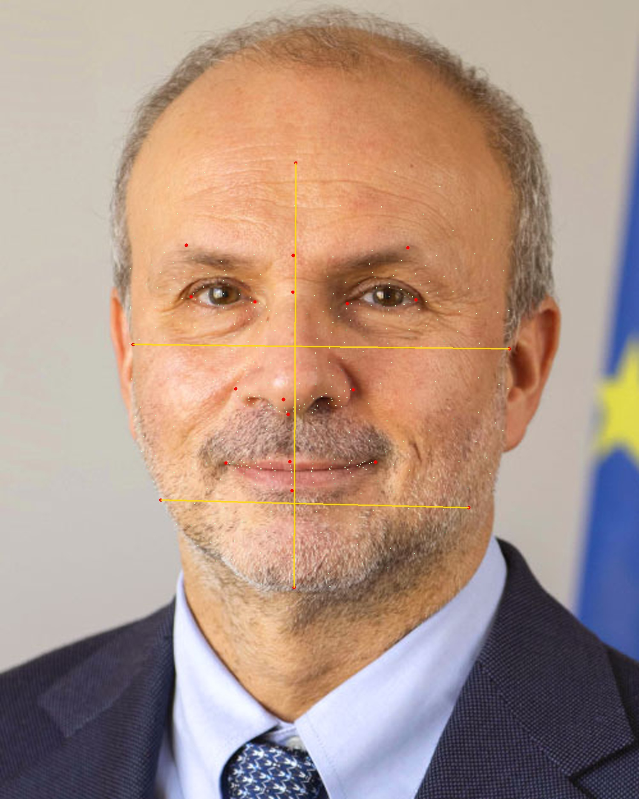
criminaloide
Orazio Schillaci
Ministro della Salute
Tipocriminaloide
Mandibola+0,3
Zigomi+1,0
Larghezza del naso+1,4
Deviazione del naso−0,3
Spessore delle labbra−0,9
Asimmetria del volto+0,1
Grandezza degli occhi−0,8
Lunghezza del naso−0,9
Nessuna anomalia propria. Delinquente d'occasione: nulla lo distingue dalla media del gruppo.
Fotografia di bassa qualità: risultato da confermare. Se il soggetto ci invia un suo ritratto migliore, ricalcoliamo.
Foto: raccolta dalla redazione
Soggetto n. 210 anomalie
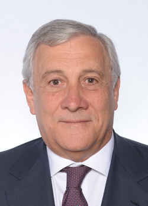
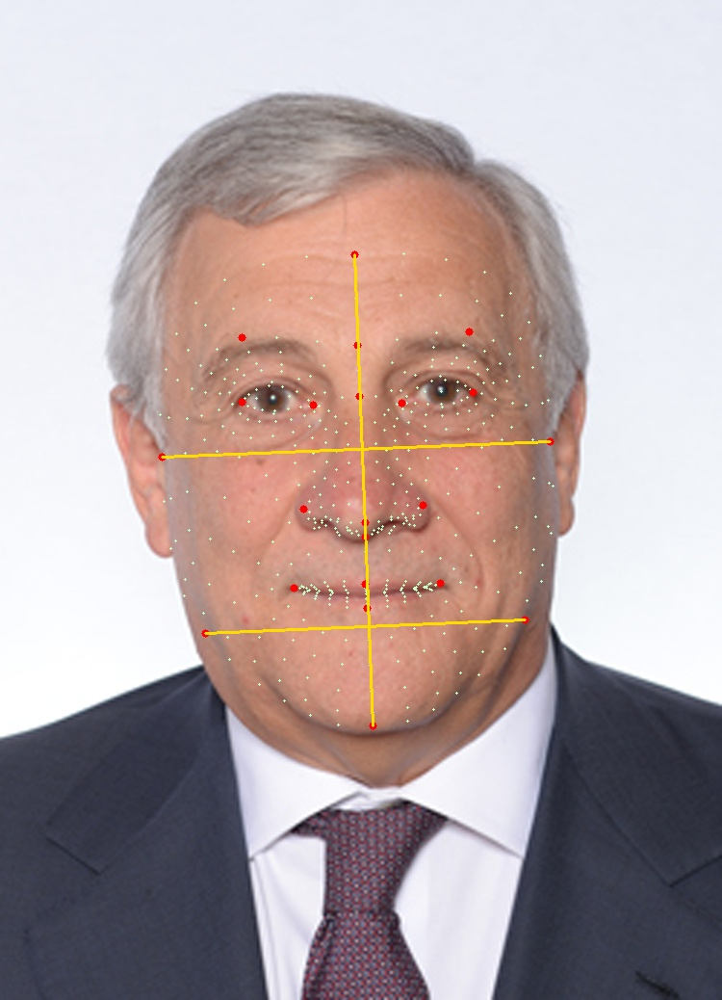
criminaloide
Antonio Tajani
Vice Presidente - Ministro degli Esteri
Tipocriminaloide
Mandibola+0,5
Zigomi−0,8
Larghezza del naso−0,5
Deviazione del naso+1,2
Spessore delle labbra−1,3
Asimmetria del volto−0,1
Grandezza degli occhi−0,1
Lunghezza del naso+0,2
Nessuna anomalia propria. Delinquente d'occasione: nulla lo distingue dalla media del gruppo.
Fotografia di bassa qualità: risultato da confermare. Se il soggetto ci invia un suo ritratto migliore, ricalcoliamo.
Foto: Camera dei deputati
Soggetto n. 220 anomalie
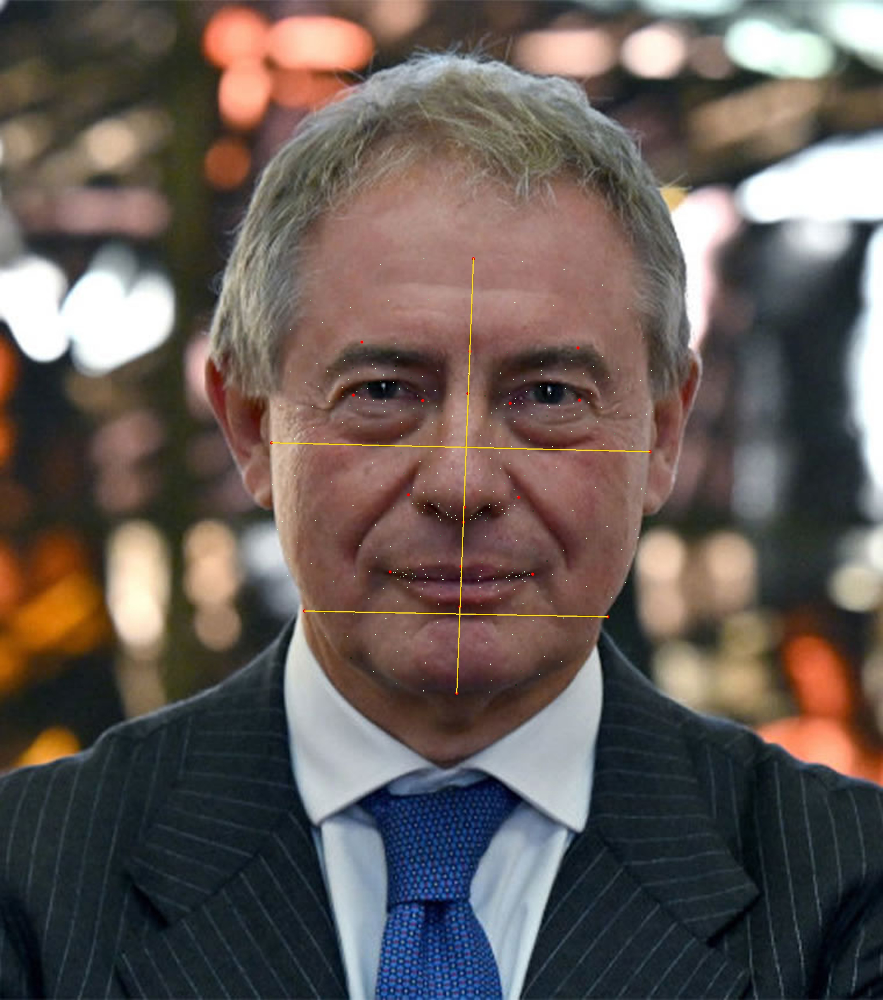
criminaloide
Adolfo Urso
Ministro delle Imprese e del Made in Italy
Tipocriminaloide
Mandibola−0,6
Zigomi+0,4
Larghezza del naso−0,4
Deviazione del naso−0,5
Spessore delle labbra+0,1
Asimmetria del volto−0,8
Grandezza degli occhi−0,1
Lunghezza del naso+0,2
Nessuna anomalia propria. Delinquente d'occasione: nulla lo distingue dalla media del gruppo.
Foto: Senato della Repubblica
Soggetto n. 230 anomalie
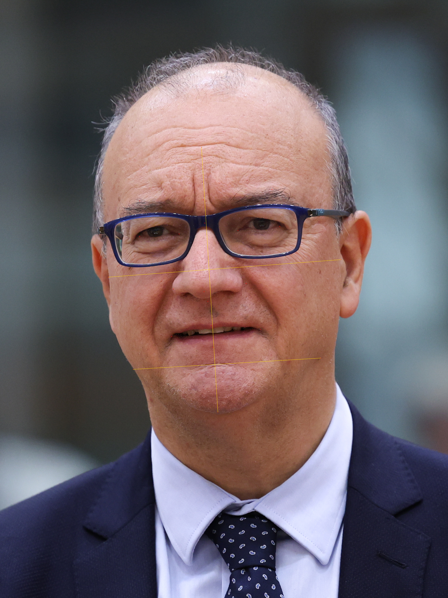
criminaloide
Giuseppe Valditara
Ministro dell'Istruzione e del Merito
Tipocriminaloide
Mandibola−0,4
Zigomi+0,8
Larghezza del naso+0,9
Deviazione del naso−0,4
Spessore delle labbra−0,4
Asimmetria del volto−0,6
Grandezza degli occhi−0,9
Lunghezza del naso−0,0
Nessuna anomalia propria. Delinquente d'occasione: nulla lo distingue dalla media del gruppo.
Fotografia di bassa qualità: risultato da confermare. Se il soggetto ci invia un suo ritratto migliore, ricalcoliamo.
Foto: raccolta dalla redazione
In attesa di misurazione
Soggetti di cui non disponiamo ancora di un ritratto frontale adatto.
Andrea AbodiMinistro per lo Sport e i Giovani
Marina Elvira CalderoneMinistra del Lavoro e delle Politiche sociali
Metodo
Come misuriamo
Un programma individua 478 punti su ogni volto e ne ricava alcune proporzioni. Ogni soggetto è confrontato con la media dei colleghi: chi se ne allontana troppo riceve il tratto corrispondente.
Stessa faccia, due verdetti
Basta cambiare fotografia perché la stessa persona passi da «anomala» a «normale». È successo durante la costruzione di questo atlante. [Sezione da sviluppare.]
Perché lo facciamo
[Testo da scrivere: sorveglianza, identificazione, norme a tutela di libertà e riservatezza.]